Trabajo semanal 10 - Funciones de excitación no disipativas
Síntesis de funciones de excitación
Sea la función:
\[Z(s)=\frac{(s^2+3)(s^2+1)}{s(s^2+2)}\]
Se pide hallar la topología circuital y los valores de los componentes para:
Síntesis de Z(s)
mediante el método de Foster en su versión “paralelo” o “derivación”.
Idem a) mediante Cauer 1 y 2.
Sea
\[Y(s)=\frac{3s(s^2+7/3)}{(s^2+2)(s^2+5)}\]
Obtenga los valores de los componentes de la siguiente red sabiendo que L2 y C2 resuenan a 1 r/s.
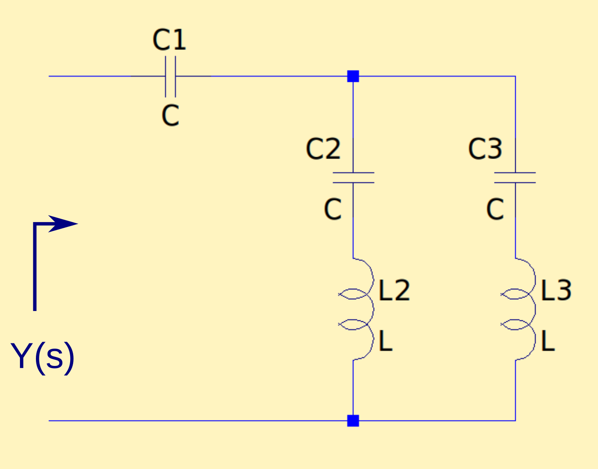
Manuscrito
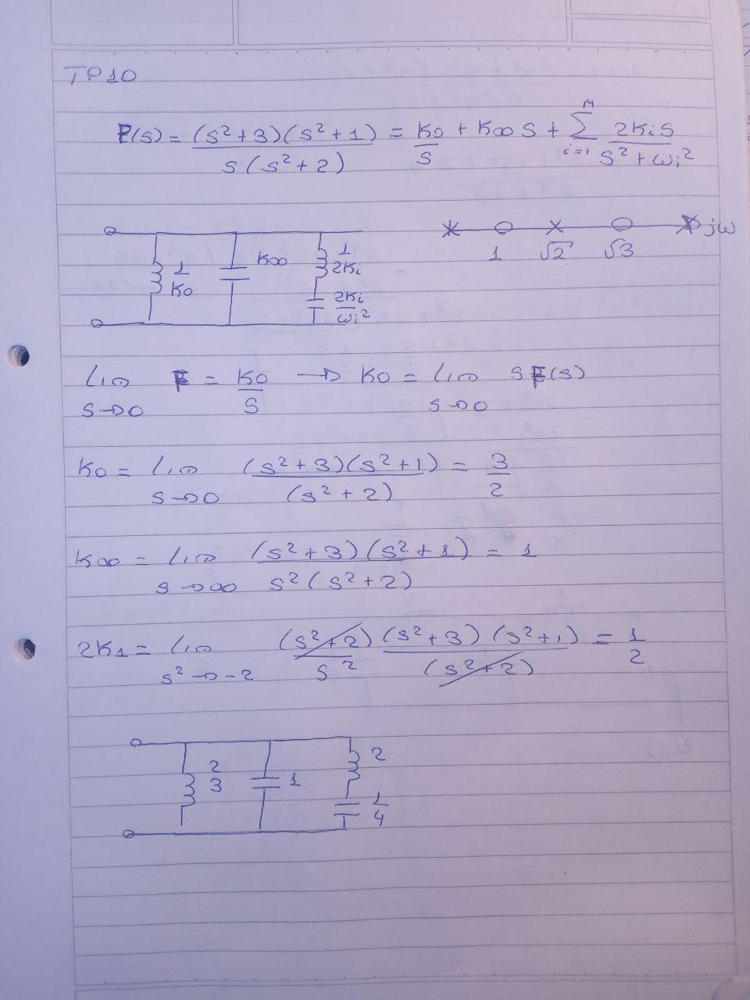 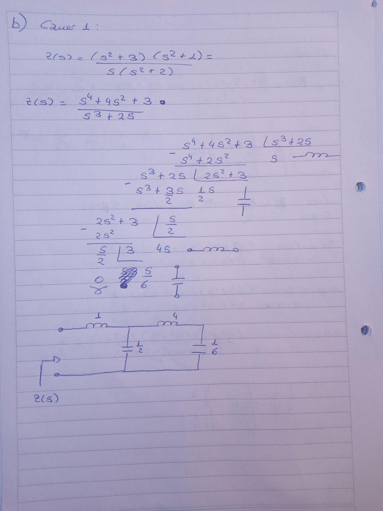 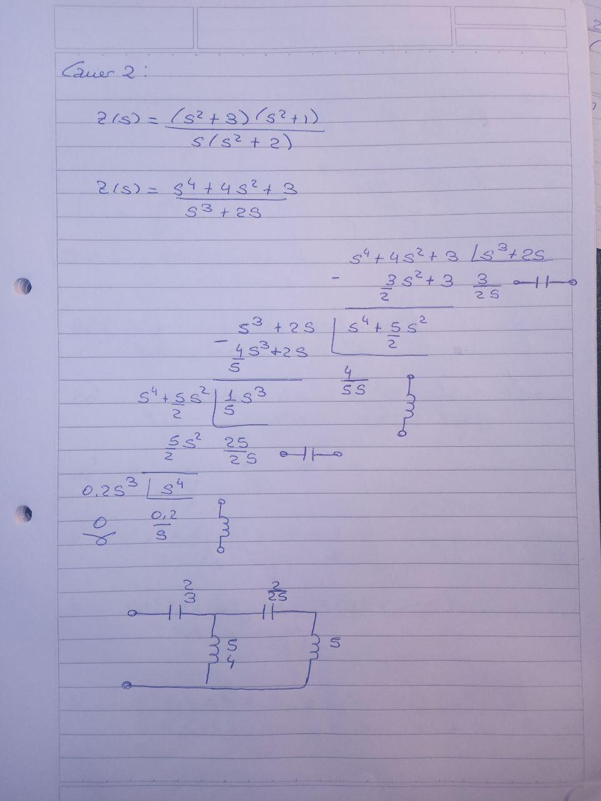  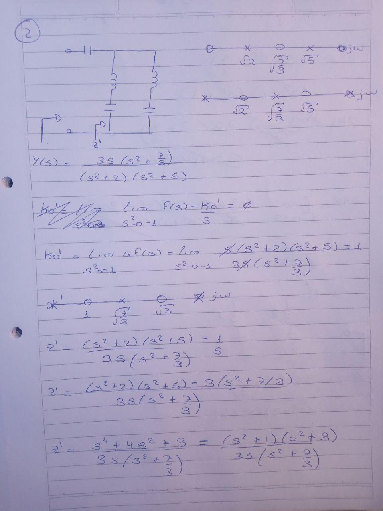 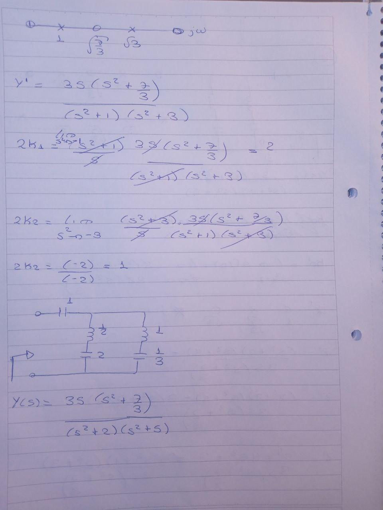
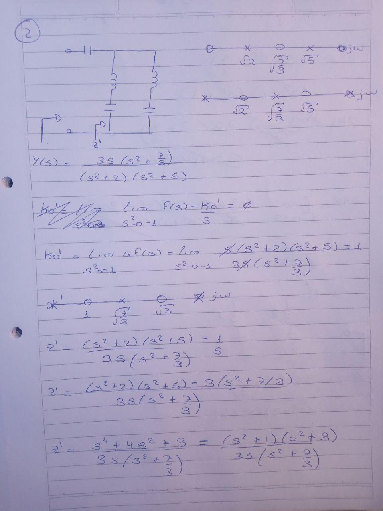 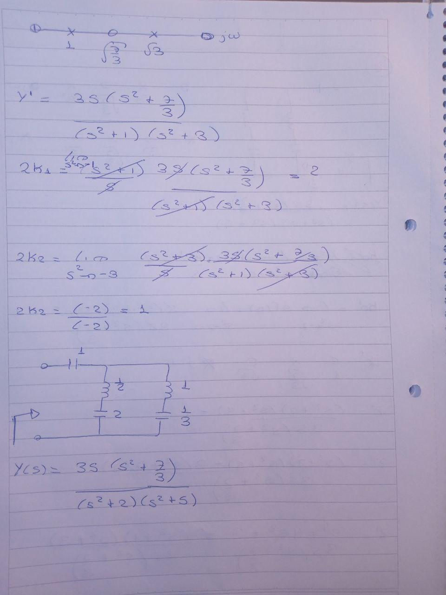
Verificacion Ej1
[23]:
import sympy as sp
# Ahora importamos las funciones de PyTC2
from pytc2.sintesis_dipolo import foster
from pytc2.dibujar import dibujar_foster_serie, dibujar_foster_derivacion
from pytc2.general import print_latex, print_subtitle, a_equal_b_latex_s
from pytc2.sintesis_dipolo import cauer_LC
from pytc2.dibujar import dibujar_cauer_LC
# Resolución simbólica
s = sp.symbols('s ', complex=True)
# Sea la siguiente función de excitación
FF = (s**2 + 3)*(s**2 + 1)/(s**3 + 2*s)
print_latex(a_equal_b_latex_s('F(s)', FF))
# Se expande FF a la Foster
k0, koo, ki_wi, _, FF_foster = foster(FF)
print_subtitle('Foster derivacion')
print_latex(a_equal_b_latex_s(a_equal_b_latex_s('Y(s)=F(s)', FF)[1:-1], FF_foster ))
# Tratamos a nuestra función imitancia como una Y
dibujar_foster_derivacion(k0, koo, ki_wi, y_exc = FF)
print_subtitle('Cauer remociones en infinito')
# Implementaremos FF mediante Cauer 1 o remociones continuas en infinito
koo, F_cauer_oo, rem = cauer_LC(FF, remover_en_inf=True)
print_latex(a_equal_b_latex_s(a_equal_b_latex_s('F(s)', FF)[1:-1], F_cauer_oo ))
# Tratamos a nuestra función inmitancia como una Z
dibujar_cauer_LC(koo, z_exc = F_cauer_oo)
print_subtitle('Cauer remociones en DC')
# Implementaremos F mediante Cauer 2 o remociones continuas en cero
k0, F_cauer_0, rem = cauer_LC(FF, remover_en_inf=False)
print_latex(a_equal_b_latex_s(a_equal_b_latex_s('F(s)', FF)[1:-1], F_cauer_0 ))
# Tratamos a nuestra función inmitancia como una Z
dibujar_cauer_LC(k0, z_exc = F_cauer_0)
$\displaystyle F(s)=\frac{\left(s^{2} + 1\right) \left(s^{2} + 3\right)}{s^{3} + 2 s}$
Foster serie
$\displaystyle Y(s)=F(s)=\frac{\left(s^{2} + 1\right) \left(s^{2} + 3\right)}{s^{3} + 2 s}=s + \frac{s}{2 \left(s^{2} + 2\right)} + \frac{3}{2 s}$
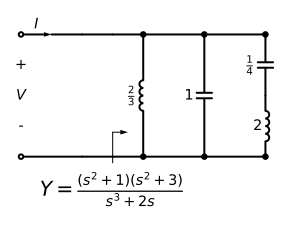
Cauer remociones en infinito
$\displaystyle F(s)=\frac{\left(s^{2} + 1\right) \left(s^{2} + 3\right)}{s^{3} + 2 s}=s + \frac{1}{\frac{s}{2} + \frac{1}{4 s + \frac{6}{s}}}$
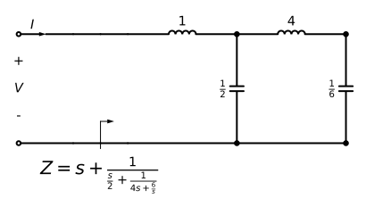
Cauer remociones en DC
$\displaystyle F(s)=\frac{\left(s^{2} + 1\right) \left(s^{2} + 3\right)}{s^{3} + 2 s}=\frac{1}{\frac{1}{5 s + \frac{25}{2 s}} + \frac{4}{5 s}} + \frac{3}{2 s}$
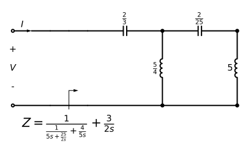